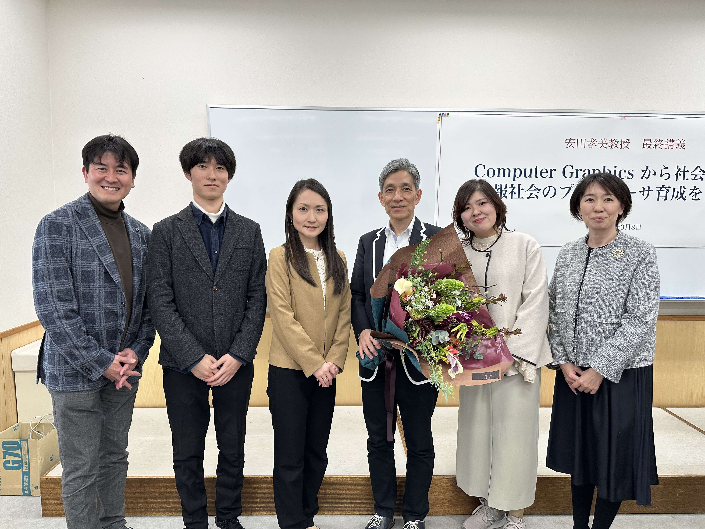
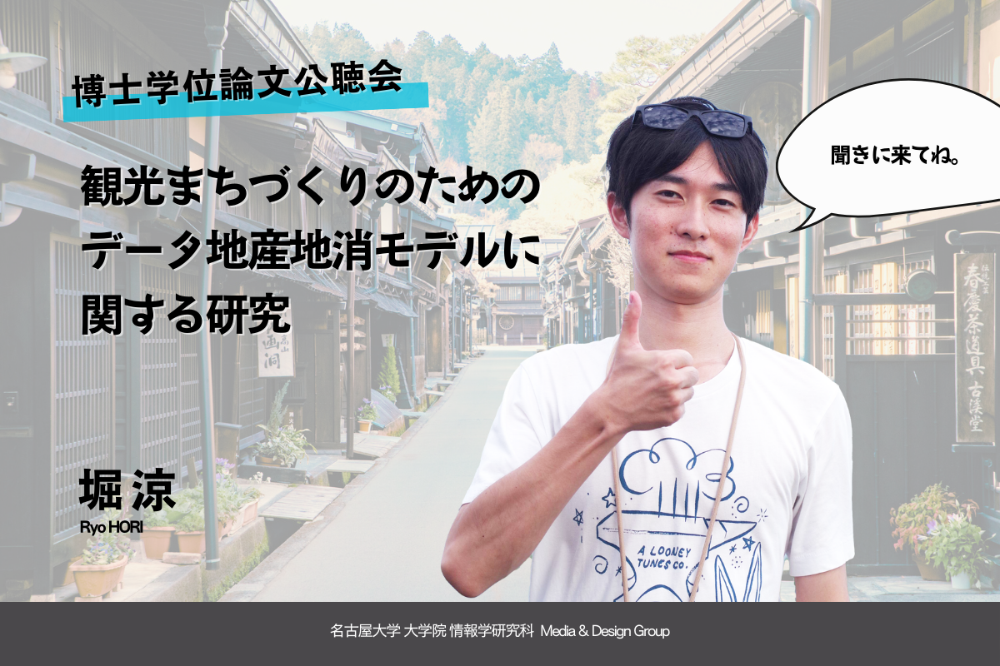
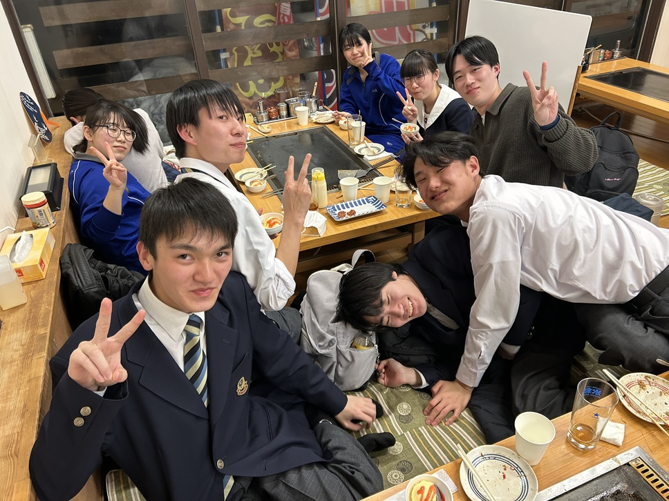
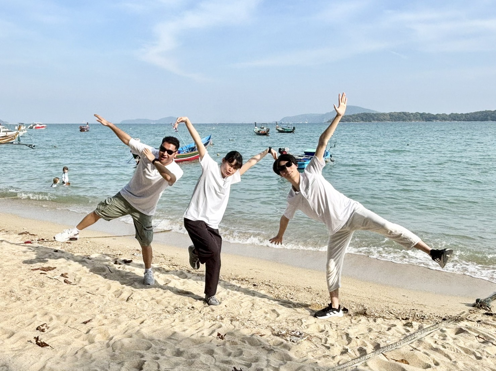
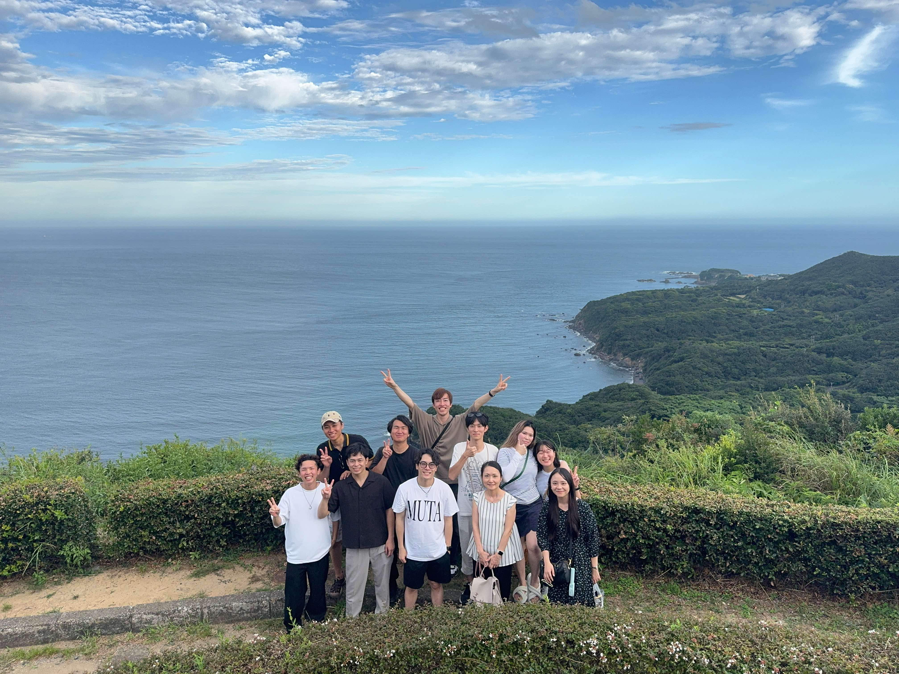
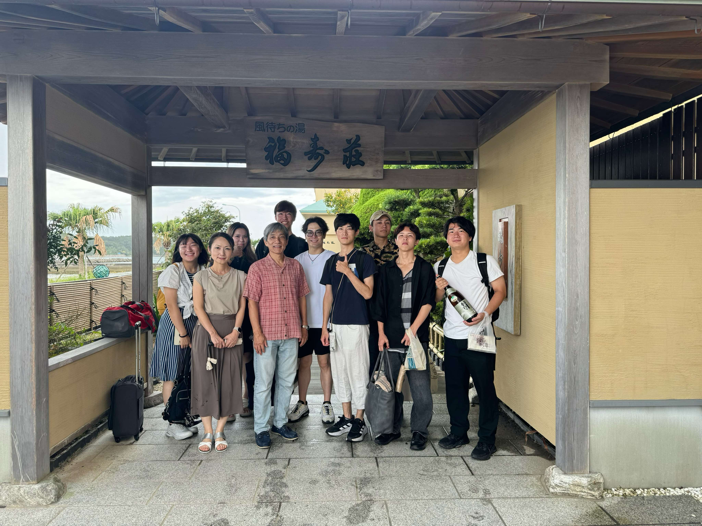

- 2025/3/8
安田孝美教授の最終講義でした。修了の記念写真を撮影しました。

最終講義後情報学研究科棟第１講義室にて。（元指導教員の遠藤先生，指導教員の浦田真由先生，堀，偉大なる師の安田孝美先生）
- 2025/2/18 15:00-16:30
博士学位論文公聴会でした。対面とオンラインできていただいた皆さんに心より感謝申し上げます。時間ぴったりに終了しました。

知り合いの先生が作ってくれた宣伝チラシ。ポップすぎて現地には貼れず。友人には送付。
 公聴会の様子。先輩が撮影してくれました。
公聴会の様子。先輩が撮影してくれました。
- 2025/2/14
飛騨高山高校の共同研究1期生と締めのお好み焼き食べ放題に行きました。今年度の研究を大いに助けてくださり心より感謝しています。元気と希望をもらい，僕も多くのことを教えていただきました。

高山市のあんとにて，飛騨高山高校の3年生たちと（筆者撮影）。
- 2025/1/11
中部支部でした。いちばん手をかけた発表が受賞しました。ニコニコ。共著の先生とも対面でたくさんお話しできました。
- 2025/1/5-10
e-asiaプロジェクトでタイで開催されたいシンポジウムに参加しました。

タイの海辺テラスにて，日本チームの他の学生と。
- 2024/12/08
博論が全然完成しません。多くのご迷惑をかけている気がします。申し訳ありません。
- 2024/12/01
第6回飛騨高山学会に参加しました。今年は初めて2日間のフル参加でした。学びが多いとおもに，多くの方と
お知り合いになれました。高山の支所地域にも行ってみたいと思いました。
- 2024/11/28
新歓でした。いろいろお話できて楽しかったです。
- 2024/11/15
第４回ICTを活用したまちづくりワークショップ。盛況でした。来て頂いた皆さんありがとうございました。
 coming sooooooooon...
coming sooooooooon...
- 2024/9/21-22
ゼミ旅行in三重。非常に良かったです。来年も楽しみ。

鳥羽展望台 海女のテラスにて。

福寿荘にて。（安田孝美教授入り）
- 2024/9/9
今日はなんか元気でした。嬉しい。
- 2024/8/31-9/3
初めての青森に来ました。とっても良いところでした。もう少し英語を勉強したほうが良いかもしれないことが明らかになりました。
- 2024/8/26
岐阜市で自動運転バスに乗りました！！！ミライ。
- 2024/8/23
最近調子が悪いです。お盆前からです。ごめんなさい。
- 2024/8/16
ついにあのオンボロエレベータが一新されます。につき，9/30までエレベータが使えなく温室とも呼ばれる階段で6階まで上がっています。意外といけます。
- 2024/8/9
5年（くらい）連続でオープンキャンパスに参加しました。今年は呼ばれてないけど自主的に来ました。たくさんの高校生に来てもらって嬉しいです。
- 2024/8/9
ラボのB4たちが無事に大学院入試に合格したようです。来年は期待の年です。楽しみです。
- 2024/7/20-21
観光情報学会全国大会@広島。久しぶりに視察モチベが高く悔いの無い良い動きができました。多くの先生も認知できてよかったです。
- 2024/5/6
拡大すると背景画像の色が濃くなるiOS特有のバグを直しました．シンプルに白みがかかった画像を元から配置しました．
- 2024/4/23
指導教員にもう少しおしゃれな服を着たらどうかと”指導”されました。質問したら着るべき服も”指導”してもらえるのでしょうか。
- 2024/4/21
ウェブサイトを新しくしました。右クリック禁止および画像がだんだん表示される点がポイントです。
- 2024/3/30
東京でスズキ自動車のLINに参加しました。たくさんのインドの学生とお話しできました。バスがインドの匂いで面白かったです。
- 2024/3/15くらい
人生で初めて本の校閲をさせてもらいました。謝辞に載るらしいです。楽しかったです。
- 2024/3/4-11
フィリピンに行きました。個人的にはインドに似ていました。e-asiaのプロジェクトの他の学生と仲良くなれました。嬉しいです。
- 2024/2/15-16
高山で勉強会を実質３本やりました。デジタルに興味がある方々がたくさんいて嬉しいです。
- 2024/1/25
高山で近年稀に見る良いヒアリングができました。ありがとうございました。
- 2023/12/25
通常業務に影響が出ている気がするので，即レスを原則やめます。
- 2023/11/19
ChatGPT英会話を始めました。精度はまあ，そこそこいいです。いつでも気軽にできる点は素晴らしいです。
- 2023/11/18
研究室の後輩が情報文化学会で発表をしました。近年最も納得感の高いプレゼンの一つでした。
- 2023/10/10-13
GCCE@奈良。初めての国際学会。質疑応答が怖かったですが，共著でもない後輩の質問になぜか答えました。
- 2023/09/24-25
佐世保出張。初めて生成AIに関して詳しく考えました。
- 2023/10/02
新しいB3が入ってきました。皆さんいい子たちで楽しみです。
- 2023/09/02,03
初めての地域活性学会@豊岡。デジタルセッションに割り当てていただき，他の方の発表もとても興味深かったです。似たようなことをやっている先生を知ることもできました。来年も来たいです。
- 2023/07/29,30
観光情報学会＠北海道。一年ぶりの観光情報学会全国大会です。早いです。YouTubeの指標を作る研究や，ChatGPTの口コミレーティングの研究が興味深かったです。
- 2023/07/20,21
久しぶりに高山に出張に行きました。懐かしさを感じました。お忙しい中，お時間を作ってくださり本当にありがとございます。
- 2023/07/01
東京出張に行きました。
- 2023/5/20
FlutterをUdemyを見ながら触ってみました。結構簡単にさまざまなアプリが作れそうで便利です。
- 2023/05/20
中部大学のTu先生と共に，研究室でAI勉強会を始めました。
- 2023/05/15
研究室のサーバやネットワークの確認をしました。意外とわかりましたが，よくわからないところもあって勉強します。
- 2023/04/01
名古屋大学に3回目の入学しました。
- 2023/3/11
UDC2022で，最優秀賞・銅賞を受賞しました。@東大駒場
- 2023/3/9
東京出張@首相官邸
- 2023/3/2-4
東京出張@情報処理
- 2022/1/6
修論がヤヴァイです。
- 2022/12/14
初めて自分の発表で受賞しました（観光情報学会第18回全国大会，大会優秀賞）。とても嬉しかったです。来年も頑張ります。
- 2022/12/12
高山において，懐に余裕があり，初めて飛騨牛のステーキ重を食べました。美味しかったです。早く大人になりたいです。
- 2022/12/11
高山のホテルの方や，お知り合いのすごい方々と夕ご飯をご一緒しました。とても勉強になりました。ありがとうございました。
- 2022/11/29
一般社団法人 建設コンサルタンツ協会の勉強会で，高山での研究について発表しました。
- 2022/11/25
アーバンデータチャレンジの中間報告会で，高山での研究について発表しました。
- 2022/10/29
高山市役所で第２回まちづくりワークショップを開催しました。内容は前回よりもパワーアップした上に，参加者の皆さんの評価もパワーアップしたものになっていて，大変嬉しかったです。
- 2022/10/06
DC1の内定の紙を持って先生方と写真を撮りました。嬉しいです。
- 2022/09/28
DC１に通りました。お忙しい中添削や相談に乗ってくださった研究室の先生3人をはじめ，他の皆様，申請書を読んでくださった審査員の先生方，さまざまな形で博士課程への進学を可能にしてくださった皆様，ありがとうございます。ゴールではなくスタートなので引き続き頑張ります。
- 2022/07/29,30,31
初めてのオフライン学会に参加しました。他の大学の先生方ともお話しする機会があってとても楽しかったです。今後はオフラインで参加したいです。
- 2022/07/24
教育哲学者の宇佐美寛氏の本に出会いました。その後追加で２冊ポチりました。
- 2022/07/20
研究室の教授と，1時間以上1on1ディスカッションをしました。とても楽しかったので，勝手に月1回くらい時間を設定しようと思いました。
- 2022/07/18,19
高山に出張をしました。いつもありえないくらい親切に対応してくださる職員さん商店街の方など，高山の皆さんに感謝です。
- 2022/07/15
研究のデータ基盤としてAWSをバリバリ触り始めました。インフラを意識しないで良いところを中心に，めちゃめちゃ便利です。
（同じレベルの国産クラウドがあれば，研究費なのでそちらに使いたい，，，）
- 2022/05/26
DC１に応募しました。大仕事でしたが，TMIの頼れる友人たちと協力し合って出すDC1は楽しさもありました。ありがとうございました。
- 2022/5/20
研究室M1の新歓を行いました。想像よりだいぶ盛り上がって楽しかったです。
- 2022/4/20
B3の子たちが研究室見学に４人も来てくれました。嬉しい。
- 2022/4/15
今週は，７日間のうち５日間も高山出張をしていました。お世話になった皆様と先生に感謝いたします。
- 2022/4/15
高山市から，授業のために研究説明を生中継で行いました。興味を多くの学生に持ってもらってとても楽しかったです。
- 2022/4/4
後輩２人と，グランピで，研究について色々相談させてもらいました。
- 2022/4/1
ドメインを購入しました。
- 2021/11/26
お世話になっている先生方に「豆腐懐石 くすむら」に連れて行ってもらいました。おいしかったです。
- 2021/10/01
23歳の誕生日を迎えました。お祝いしていただいた皆さん，ありがとうございます！
研究室の浦田真由先生が，准教授にご昇任されました。おめでとうございます！
- 2021/09/02
研究室に新しいブラインド（ピンク）がやってきました。奇抜さを目指していましたが，意外と馴染んでしまいました。
- 2021/08/31
研究室の将来について，後輩と4時間に及ぶディスカッションをしました。
- 2021/8/某日
研究室のウェブサイトの更新方法を完全に理解しました。
- 2021/8/12
名古屋大学情報学部のオープンキャンパスに大学院生として参加し，高校生に大学生活などを教えました。
- 2021/05/06
研究室に、彼の任天堂Switchがやってきました。
- 2021/04/30
おぐりん(githubのやつ)に教えてもらった方法はHTMLで大変だったので、google.siteに変えました。
- 2021/4/24,25
高山出張で、高山市にJetsonを置かせていただきました。ご協力いただいた皆様、ありがとうございます。
- 2021/04/01
名古屋大学大学院情報学研究科社会情報学専攻情報社会設計論講座入学
- 2021/03/18
第7回とうかい観光情報学研究会(オンライン開催)
- 2021/02/04
先輩のおぐりんに方法(githubのやつ)を聞いて、HPを始めました。
- 2020/12/12
第11回社会情報学会中部支部研究会(SSICJ2020-1)(オンライン開催)
- 2020/03/28,29
日本情報考古学会第43回大会(紙面開催)